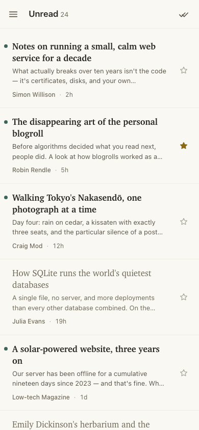
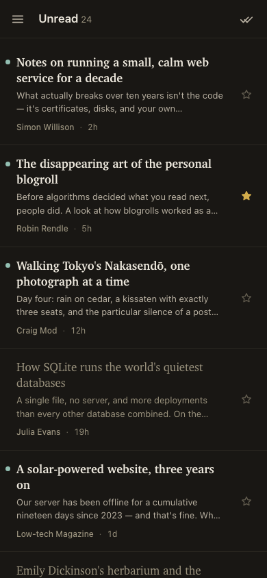

FeatherReader
read, quietly
A minimalist, atproto-native RSS reader — your subscriptions live in your own PDS.
No signup, no password — you approve access on your own atproto server.


-
Own your data
Subscriptions, folders, stars, and read-state are written as open-standard
community.lexicon.rss.*records in your atproto PDS — portable to any reader that speaks the lexicon. Leaving is as easy as arriving. -
Fast, quiet, keyboard-driven
Server-rendered pages, system fonts, j/k shortcuts. No tracking, no analytics, no algorithm — just your feeds, in order.
-
Open source & self-hostable
Free software under the AGPL-3.0: read the code, file issues, or run your own copy. Self-hosting is a first-class path, not an afterthought.